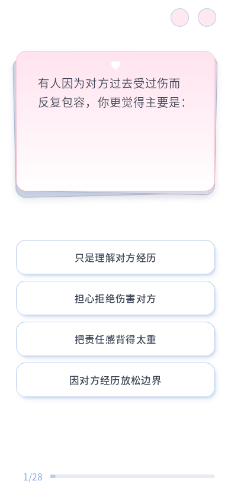
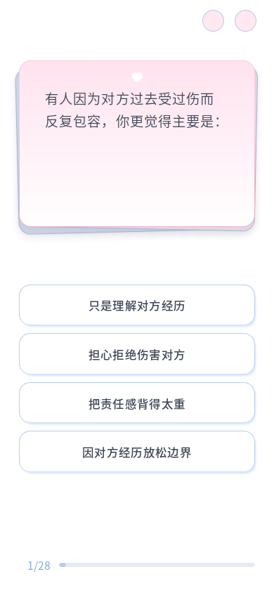

选项阴影改用清亮的 #69a8ff，近层模糊由 3px 缩至 2px，远层由 10px 缩至 6px；降低透明度叠加造成的暗沉。选项描边渐变从底部 35% 缩至 20%。按钮间距增加 5%，由 10.8px 变为 11.34px；第一项位置不变，后续三项依次向下 0.54px、1.08px、1.62px，进度位置保持稳定。
验证：10 个视口、全部 96 题共 960 组通过；C10／C24／A28 对比确认间距向下展开，按钮高度与字号保持不变；文字完整、无重叠、进度可达、重复 resize 稳定。200% 字体下四个长短题通过，实际选答动画与第 8 题进度预览通过。相关 Node 测试 2/2。


查看第 8 题效果 · 布局验证数据 · 200% 字体验证
题目 Markdown、运行 JSON、HTML、共享 CSS 与答题控制器哈希未变。